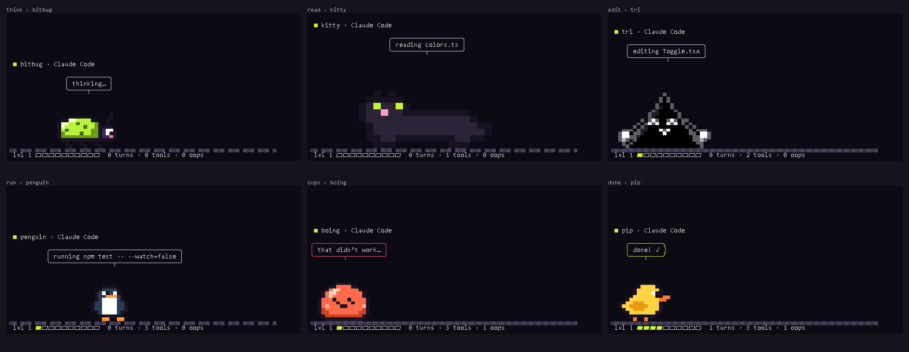

A pet for your coding agent
Put a pixel pet in a terminal pane next to Claude Code or Codex. It watches your agent work, live: it paces while it thinks, sniffs about while it reads your files, gets busy while it edits, panics when a command fails, cheers when the turn is done, and falls asleep when you wander off. It levels up as your agent ships.

Get it running
Split your terminal (Windows Terminal: Alt+Shift+D · iTerm: Cmd+D · tmux: Ctrl+B % · VS Code: the split button on the terminal), run your agent in one half and this in the other:
npx piixpal-pet
Or grab the single file (no npm needed, just Node 18+):
# macOS, Linux, Git Bash curl -fsSL https://piixpal.dvkk.dev/pet.mjs -o pet.mjs node pet.mjs
# Windows PowerShell iwr https://piixpal.dvkk.dev/pet.mjs -OutFile pet.mjs node pet.mjs
No setup: it finds whichever session was active last, Claude Code or Codex, by reading the logs they already write (~/.claude/projects, ~/.codex/sessions). Nothing leaves your machine. Press p to pet it, q to quit.
The pets
Pick one with --pal; it remembers. npx piixpal-pet list draws them all in your terminal.
--pal bitbug --pal pip --pal boing --pal moss --pal kitty --pal penguin --pal gecko --pal tri --pal bumble --pal shibe --pal capy --pal frog --pal duckling --pal shel --pal roomba --pal hiss --pal termi --pal beepOr bring your own: make a pal in the Pal Maker's Pixel tab, copy its code, and run npx piixpal-pet --make <code>. Your pet, watching your agent.
In Claude Code's status line
No room for a pane? Put a one-line pet in Claude Code's status line. Add this to ~/.claude/settings.json (point it at where you saved pet.mjs, or use npx -y piixpal-pet statusline):
"statusLine": { "type": "command", "command": "node ~/pet.mjs statusline" }
It shows the pet's face and what the agent is up to: (•̀ᴗ•́)✎ bitbug editing app.ts.
Let it tell you when the agent needs you
Optional. When the agent stops to ask permission, the pet waves and rings the terminal bell, so you can look away while it works.
Claude Code: a Notification hook in ~/.claude/settings.json
"hooks": {
"Notification": [{ "hooks": [
{ "type": "command", "command": "node ~/pet.mjs notify" }
] }]
}Codex: in ~/.codex/config.toml
notify = ["node", "/home/you/pet.mjs", "notify"]